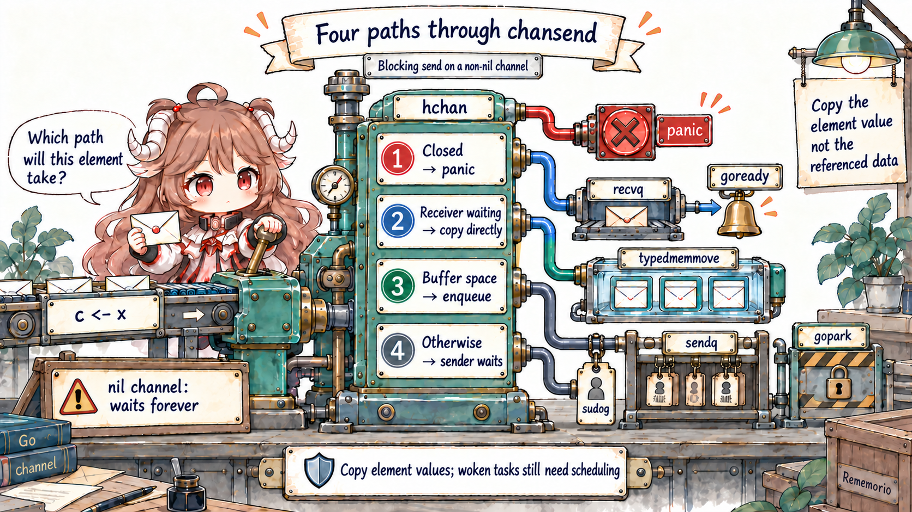
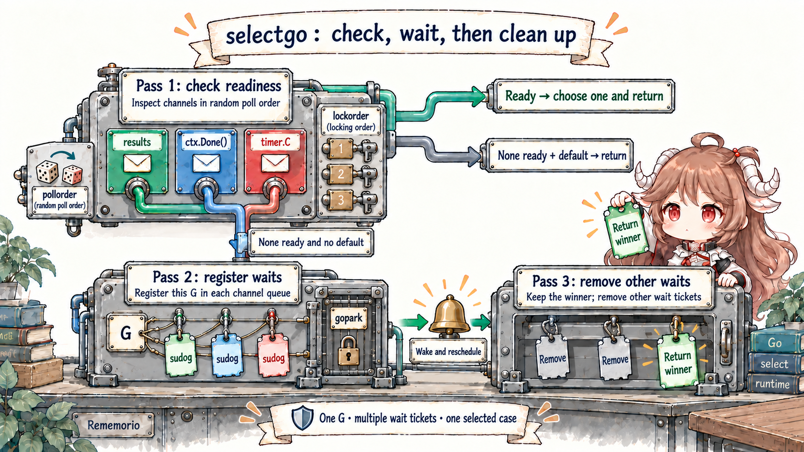
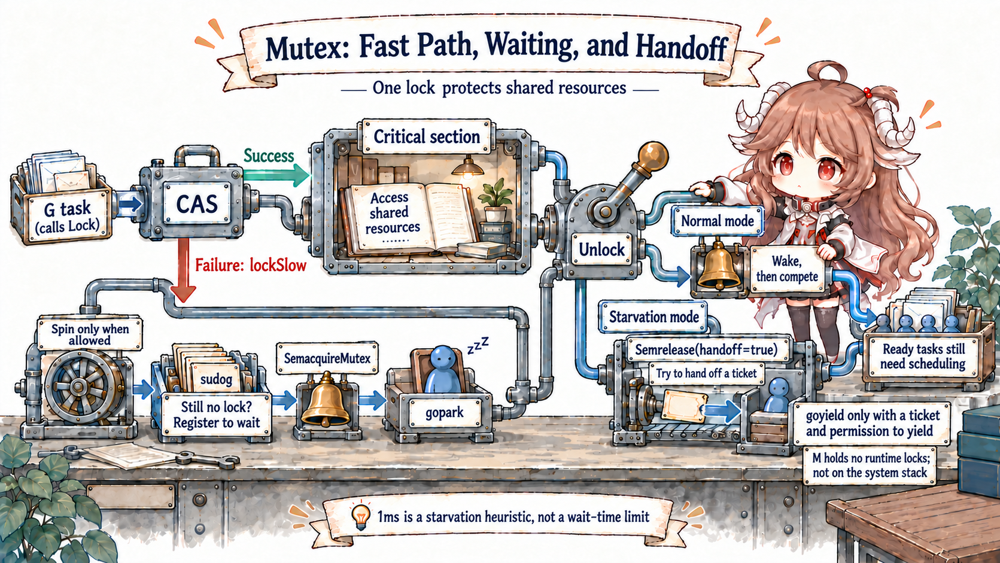

Reading contract: do not begin by asking which tool is faster. If data must be handed to another goroutine, think of a channel first. If several pieces of code must protect one shared state, think of a lock first. The second half explains the source paths for blocking, wake-up, and memory ordering.
At the language level, begin with the synchronization guarantees in the Go Memory Model. Source details are pinned to Go 1.26.0: runtime/chan.go, runtime/select.go, internal/sync/mutex.go, and runtime/sema.go. Queue shapes, state bits, the 1 ms threshold, and direct handoff describe the current gc runtime; application code must not treat them as fixed constants.
1. Start with Two Different Concurrency Problems
In fetchd, a worker finishes fetching a page and hands one fetchResult to the aggregator. This is a
transfer of work: the sender gives away a value and the receiver continues processing it, so a channel is natural.
A different requirement asks every worker to increment one shared success count. Nothing changes owner; several pieces of
code update the same state, so a Mutex around the read-modify-write operation is usually more direct.
Ask who owns the data, whether ownership moves, who should wait when the system is busy, and how termination propagates. Those questions define the concurrency protocol; channel and lock syntax merely implement it.
| Problem shape | Prefer | Makes explicit | Main failure boundary |
|---|---|---|---|
| Transfer work or a result to another goroutine | channel | Ownership flow, queueing, capacity, closure | Blocked send, leak, close protocol |
| Choose one of several events and support cancellation | select + channel/context | Ready set and exit path | Never-ready case, incorrect default |
| Maintain one map/counter/cache in a short critical section | sync.Mutex | Who may access shared state | Long hold time, lock order, copied Mutex |
| Lock-free read or one atomic state variable | sync/atomic | Atomic operations on one location | Splitting a multi-field invariant |
The table expands those questions into four common shapes. A channel contains a lock internally; a contended Mutex can park a goroutine. The distinction is not “lock-free versus blocking,” but the protocol exposed to the application. Building a command channel solely to protect a map also creates a dedicated goroutine, request/reply messages, and shutdown rules. Rebuilding a work queue behind a Mutex hides waiting, capacity, and ownership in fields and conditions.
2. hchan Holds Both a Buffer and Waiters
make(chan fetchResult, n) eventually creates a runtime.hchan. It is more than “a queue”: qcount/dataqsiz describe the ring buffer,
sendx/recvx are write/read positions, sendq/recvq hold blocked senders and receivers, closed records closure, and lock protects those fields and related sudogs.
type hchan struct {
qcount uint
dataqsiz uint
buf unsafe.Pointer
elemsize uint16
closed uint32
elemtype *_type
sendx uint
recvx uint
recvq waitq
sendq waitq
lock mutex
}2.1 makechan Allocation Depends on Element Pointers
When elements contain no GC pointers, hchan and its buffer can share one allocation. Pointer-bearing elements use a header plus a separately typed buffer; an unbuffered channel or zero-sized element only needs the header allocation.
This optimizes layout and scanning without changing send/receive semantics. Once constructed, dataqsiz is immutable during channel operations.
2.2 The Four Paths Through chansend
Compiled c <- x enters chansend1, which calls chansend with block=true. A nil channel parks forever. A non-nil channel, under its lock, checks closure, a waiting receiver, and buffer space before it queues the sender.

lock(&c.lock)
if c.closed != 0 {
unlock(&c.lock)
panic(plainError("send on closed channel"))
}
if sg := c.recvq.dequeue(); sg != nil {
send(c, sg, ep, func() { unlock(&c.lock) }, 3)
return true
}
if c.qcount < c.dataqsiz {
qp := chanbuf(c, c.sendx)
typedmemmove(c.elemtype, qp, ep)
c.sendx = (c.sendx + 1) % c.dataqsiz
c.qcount++
unlock(&c.lock)
return true
}A waiting receiver bypasses the buffer
Even on a buffered channel, a non-empty recvq lets send use sendDirect to copy the element into the receiver's destination, then unlock and goready that G.
The buffer is queueing space for unmatched values, not a mandatory mailbox slot for every value.
A send copies the element, not its reachable object graph
The buffered path's typedmemmove(c.elemtype, qp, ep) and the direct path both copy the channel element.
A value-only fetchResult gets independent fields. If an element contains a slice, map, or pointer, the descriptor or pointer is copied while the underlying object may remain shared—the value-semantics boundary from Chapter II.
2.3 How a Full Channel Turns a Sender into a Waiting G
With no receiver and no buffer slot, chansend acquires a sudog, associates the element address, current G, and channel, enqueues it in sendq, then calls
gopark(chanparkcommit, &c.lock, waitReasonChanSend, ...). The park commit releases the channel lock at a safe state transition, allowing the M/P to execute another G.
gp := getg()
mysg := acquireSudog()
mysg.elem.set(ep)
mysg.g = gp
mysg.c.set(c)
gp.waiting = mysg
c.sendq.enqueue(mysg)
gp.parkingOnChan.Store(true)
gopark(chanparkcommit, unsafe.Pointer(&c.lock),
waitReasonChanSend, traceBlockChanSend, 2)
A sudog is one record of a G waiting on one synchronization object, not the goroutine itself. One G executes one instruction stream, yet a select may give it one sudog per channel.
Wake-up only changes waiting back to runnable; as Chapter III showed, scheduling still lies between ready and resumed.
2.4 chanrecv Is Symmetric, with a Full-Buffer Exchange
Under the lock, receive handles closed+empty and then checks sendq. With a waiting sender, an unbuffered channel copies directly from the sender stack. A full buffered channel takes the old value at recvx, writes the blocked sender's value into that same slot, advances the ring, and wakes the sender.
The queue remains full, but its oldest element was delivered and the blocked send completed.
// Buffered channel is full; qp is both queue head and next tail.
qp := chanbuf(c, c.recvx)
typedmemmove(c.elemtype, ep, qp) // queue → receiver
typedmemmove(c.elemtype, qp, sg.elem.get()) // sender → queue
c.recvx++
c.sendx = c.recvx
goready(sg.g, skip+1)Capacity is a concurrency contract, not a casual speed knob
fetchd uses make(chan fetchResult, len(targets)). Every worker can deposit one result even if the handler has not started collecting, preventing an abandoned receive path from stranding workers after request cancellation.
The tradeoff is up to one batch of queued results when aggregation slows. Capacity zero enforces rendezvous; a small capacity returns pressure early; a larger one absorbs a burst while increasing memory, queue age, and discard cost.
2.5 close Broadcasts a State Change; It Does Not Free the Channel
closechan sets closed, dequeues all receivers so they wake with a zero value and ok=false, then dequeues all senders so they wake and panic. The runtime drops the channel lock before calling goready, avoiding another G's state transition while holding that lock.
Buffered values remain receivable; only closed+empty produces the zero value.
The engineering contract is usually “the sender/owner closes.” A receiver should not guess whether producers remain. Multiple senders racing to close need a distinct owner, sync.Once, or aggregation protocol; recover is not close coordination.
3. selectgo Is a Three-Pass Protocol
A multi-case select does not start multiple goroutines or execute every ready case. The runtime generates a randomized pollorder, then a stable lockorder sorted by hchan address so every select locks its channels in a consistent order.

Pass 1: poll for an already-ready case
A receive case checks for a waiting sender, buffered data, and closure; a send case checks closure, a waiting receiver, and buffer space. The first match executes. Randomized poll order reduces source-order bias, but it is not cross-goroutine FIFO, a fairness SLA, or priority. A non-blocking select with default unlocks and chooses default when no case is ready.
Passes 2/3: one G joins several queues, then removes losers
With nothing ready, the runtime acquires one sudog per non-nil channel, links them into gp.waiting in lock order, enqueues each on sendq or recvq, and calls gopark.
When one channel wins the wake race, selectDone prevents another case from waking the same G again. After resuming, pass three relocks, removes the losing sudogs from their queues, releases every record, and returns the winner index.
// pass 1: poll ready cases in permuted order
for _, casei := range pollorder { /* recv/send/buffer/closed */ }
// pass 2: enqueue one sudog for every participating channel
sg := acquireSudog()
c := cas.c
sg.g = gp
sg.isSelect = true
sg.c.set(c)
c.recvq.enqueue(sg) // or sendq
gopark(selparkcommit, nil, waitReasonSelect, traceBlockSelect, 1)
// pass 3: remove every unsuccessful sudog
c.recvq.dequeueSudoG(sglist) // or sendq
releaseSudog(sglist)4. The sync.Mutex Fast Path Is One CAS
Go 1.26's public sync.Mutex delegates to internal/sync.Mutex, whose core is state int32 plus sema uint32.
Uncontended Lock uses CAS to change state from zero to mutexLocked and returns, so short low-contention critical sections never enter a runtime wait table.

func (m *Mutex) Lock() {
if atomic.CompareAndSwapInt32(&m.state, 0, mutexLocked) {
return
}
m.lockSlow()
}
func (m *Mutex) Unlock() {
new := atomic.AddInt32(&m.state, -mutexLocked)
if new != 0 {
m.unlockSlow(new)
}
}state encodes locked, woken, starving, and waiter count
The low three bits mean locked, woken, and starving; high bits count waiters. lockSlow may briefly active-spin. If it still cannot acquire, it registers a waiter with CAS and calls
runtime_SemacquireMutex(&m.sema, queueLifo, ...). A waiter that has already slept may requeue at the front so running newcomers cannot repeatedly overtake it.
4.1 The Runtime Semaphore Supplies Lossless Sleep/Wakeup
The comment in runtime/sema.go explicitly says not to think of it as an application semaphore. It is a sleep/wakeup mechanism for primitives such as Mutex, pairing every sleep with one wake even when a racing wake happens first.
An address hashes into one of 251 semaRoots; sudogs for one address form a queue, while distinct addresses are organized in a treap.
if cansemacquire(addr) { return }
s := acquireSudog()
root := semtable.rootFor(addr)
root.nwait.Add(1)
if cansemacquire(addr) { /* consume wake without sleeping */ }
root.queue(addr, s, lifo)
goparkunlock(&root.lock, reason, traceBlockSync, 4+skipframes)Normal mode favors throughput; starvation mode bounds pathological tails
Normal mode queues FIFO, but a woken waiter does not own the Mutex and competes with newly arriving Gs already on CPU. After a waiter exceeds the internal
starvationThresholdNs = 1e6, it requests starvation mode. Unlock uses Semrelease(handoff=true) to transfer a ticket and the P's next execution opportunity to the head waiter, calling goyield when safe.
The Mutex leaves starvation mode when the waiter is last or waited less than the threshold, because direct handoff has lower throughput. That 1 ms value is a Go 1.26.0 implementation heuristic that may change by release or platform; it does not promise that Lock waits at most 1 ms.
5. Both Establish Happens-Before, but Along Different Edges
| Synchronization | Memory-model guarantee | Common misreading |
|---|---|---|
| Channel send → completion of matching receive | Send is synchronized before receive completion | It covers the matched communication, not arbitrary racing shared objects |
close(c) → receive returning zero because closed | Close is synchronized before that receive | Closure does not mean every sender has stopped |
| kth receive on capacity C → completion of kth+C send | Buffer capacity can model a counting semaphore | A buffered send completing does not mean a consumer processed it |
nth Unlock → later mth Lock return | Critical-section writes are visible to the later holder | An unsuccessful TryLock has no synchronizing effect |
Correctness rests on these edges, not on the machine “usually flushing caches in time.” Channels and Mutexes cannot repair concurrent accesses that bypass their protocol.
go test -race is dynamic evidence: it finds races reached by that run, while uncovered paths still require design review.
6. Make Backpressure, Cancellation, and Contention Observable
concurrency_lab_test.go
uses testing/synctest to create an isolated bubble. After a one-slot channel receives its first value, synctest.Wait confirms that every other G is durably blocked, so the test can assert that the second send has not completed. After one receive and another Wait, the send must have resumed—without Sleep or a fragile “10 ms should be enough” guess.
synctest.Test(t, func(t *testing.T) {
results := make(chan int, 1)
secondSendCompleted := false
go func() {
results <- 1
results <- 2 // durably blocked while the buffer is full
secondSendCompleted = true
}()
synctest.Wait()
if secondSendCompleted { t.Fatal("no backpressure") }
<-results
synctest.Wait()
if !secondSendCompleted { t.Fatal("sender did not resume") }
})Experiment commands and evidence boundaries
cd go-runtime/examples/fetchd
go test ./...
go test -race ./...
go test -run TestBufferedChannelAppliesBackpressure
go test -run TestMutexProtectsSharedSummary \
-blockprofile block.out -mutexprofile mutex.out
go tool pprof -top block.out
go tool pprof -top mutex.out
go test -run '^$' -bench BenchmarkCoordinationContracts -benchmem| Evidence | Answers | Cannot answer alone |
|---|---|---|
synctest | Who is durably blocked in a controlled event order | Contention cost on a real machine |
| Block profile | Where channel/select blocking accumulated | Who held a critical section |
| Mutex profile | Which unlock paths caused lock wait | Uncontended fast-path cost |
| Execution trace | Temporal relation among park, unblock, runnable, and running | Long-term low-overhead trends |
| Race detector | Unsynchronized accesses reached by this execution | That an uncovered path is race-free |
| Benchmark | Cost of one fixed contract in this environment | Whether channels or Mutexes are “universally better” |
7. Engineering Rules for fetchd
- Use channels to transfer work and ownership. A
fetchResultmoves one way from worker to aggregator, and communication is also the completion signal. - Use Mutex for one short-lived shared state. Keep a counter, map, or cache invariant in one critical section instead of inventing an actor protocol for an increment.
- Treat capacity as a budget. Specify permitted items, bytes, and age; a buffer is not an infinite warehouse that repairs a slow consumer.
- Every potentially blocking send needs an exit story. The receiver outlives it, the select observes
ctx.Done(), or bounded capacity covers every result. - The side owning sender lifetime closes. Receivers consume closure; they do not guess whether the last sender exited.
- Do not hold a lock across network I/O, channel send, or unknown callback. Those turn a short critical section into cross-component waiting and magnify lock-order risk.
- Find waiting with profiles before reading the matching source. Optimize hold time, unnecessary wakeups, or backpressure—not the primitive by slogan.
The transferable result is: a channel combines value movement, queueing, and wake-up into a communication protocol; a Mutex combines access to one state into a critical section. Both rely on runtime park/ready. Choose by ownership and happens-before, not a performance slogan.
The next chapter will follow the error and abstraction boundary around fetchResult, separating the two-word interface, typed nil, generic dictionaries, and reflection cost.